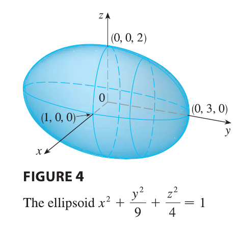
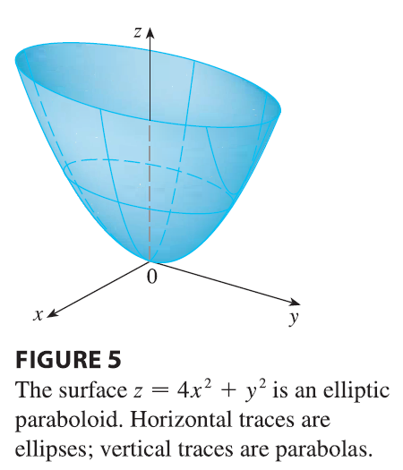
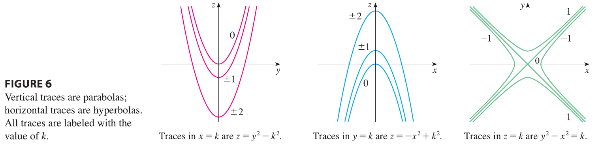
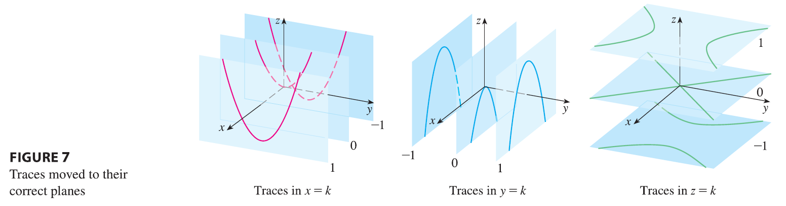
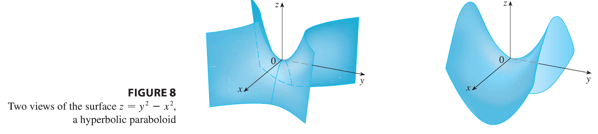

A quadric surface is the graph of a second-degree
equation in three variables \(x\),
\(y\), and \(z\). The most general such equation is
\[Ax^2 + By^2 + Cz^2 + Dxy + Eyz + Fxz + Gx +
Hy + Iz + J = 0\] where A, B, C, …, J are constants, but by
translation and rotation it can be brought into one of the two standard
forms \[Ax^2 + By^2 + Cz^2 + J = 0 \quad
\text{or} \quad Ax^2 + By^2 + Iz = 0\]
Quadric surfaces are the counterparts in three dimensions of the
conic sections in the plane.
EXAMPLE 3 Use traces to sketch the quadric surface
with equation \[x^2 + \frac{y^2}{9} +
\frac{z^2}{4} = 1\]
SOLUTION By substituting \(z = 0\), we find that the trace in the
xy-plane is \(x^2 + y^2/9 = 1\), which
we recognize as an equation of an ellipse. In general, the horizontal
trace in the plane \(z = k\) is \[x^2 + \frac{y^2}{9} = 1 - \frac{k^2}{4}, \quad
z=k\] which is an ellipse, provided that \(k^2 < 4\), that is, \(-2 < k < 2\). Similarly, vertical
traces parallel to the yz- and xz-planes are also ellipses: \[\frac{y^2}{9} + \frac{z^2}{4} = 1 - k^2, \quad
x=k \quad (\text{if } -1 < k < 1)\]\[x^2 + \frac{z^2}{4} = 1 - \frac{k^2}{9}, \quad
y=k \quad (\text{if } -3 < k < 3)\]

alt text
Figure 4 shows how drawing some traces indicates the shape of the
surface. It’s called an ellipsoid because all of its
traces are ellipses. Notice that it is symmetric with respect to each
coordinate plane; this is a reflection of the fact that its equation
involves only even powers of \(x\),
\(y\), and \(z\).
EXAMPLE 4 Use traces to sketch the surface \(z = 4x^2 + y^2\).

alt text
SOLUTION If we put \(x =
0\), we get \(z = y^2\), so the
yz-plane intersects the surface in a parabola. If we put \(x = k\) (a constant), we get \(z = y^2 + 4k^2\). This means that if we
slice the graph with any plane parallel to the yz-plane, we obtain a
parabola that opens upward. Similarly, if \(y
= k\), the trace is \(z = 4x^2 +
k^2\), which is again a parabola that opens upward. If we put
\(z = k\), we get the horizontal traces
\(4x^2 + y^2 = k\), which we recognize
as a family of ellipses. Knowing the shapes of the traces, we can sketch
the graph in Figure 5. Because of the elliptical and parabolic traces,
the quadric surface \(z = 4x^2 + y^2\)
is called an elliptic paraboloid.
EXAMPLE 5 Sketch the surface \(z = y^2 - x^2\).
SOLUTION The traces in the vertical planes \(x = k\) are the parabolas \(z = y^2 - k^2\), which open upward. The
traces in \(y = k\) are the parabolas
\(z = -x^2 + k^2\), which open
downward. The horizontal traces are \(y^2 -
x^2 = k\), a family of hyperbolas. We draw the families of traces
in Figure 6, and we show how the traces appear when placed in their
correct planes in Figure 7.


alt text

alt text
In Figure 8 we fit together the traces from Figure 7 to form the
surface \(z = y^2 - x^2\), a
hyperbolic paraboloid. Notice that the shape of the
surface near the origin resembles that of a saddle. This surface will be
investigated further in Section 14.7 when we discuss saddle points.
EXAMPLE 6 Sketch the surface \(\frac{x^2}{4} + y^2 - \frac{z^2}{4} =
1\).
SOLUTION The trace in any horizontal plane \(z = k\) is the ellipse \[\frac{x^2}{4} + y^2 = 1 + \frac{k^2}{4}, \quad
z=k\] but the traces in the xz- and yz-planes are the hyperbolas
\[\frac{x^2}{4} - \frac{z^2}{4} = 1, \quad
y=0 \quad \text{and} \quad y^2 - \frac{z^2}{4} = 1, \quad x=0\]
This surface is called a hyperboloid of one sheet and
is sketched in Figure 9.